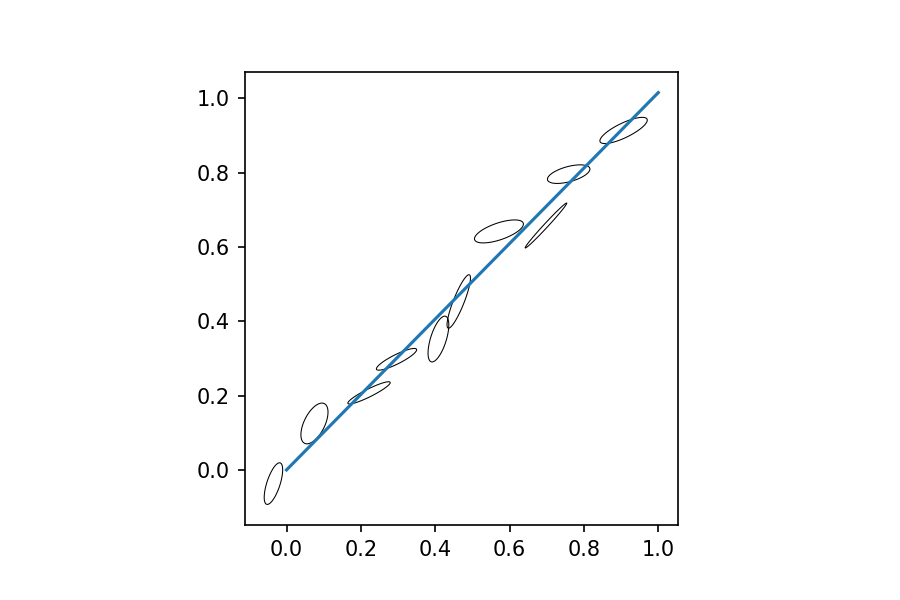

Yorkfit

Implementation of the standard isochron method emplyoed by ISOPLOT (e.g. Ludwig, 2003) as defined in York 1966, 1969 York et al. 2014. The method uses two measured variables with correlated errors.
from pprint import pprint
from collections import namedtuple
import numpy as np
from scipy import stats
import matplotlib.pyplot as plt
import matplotlib as mpl
from errorellipse import error_ellipse
Yorkfit = namedtuple('Yorkfit', ['y0', 'alpha',
'y0_err', 'alpha_err',
'MSWD', 'deg_f',
'x_adj', 'y_adj'])
Regression function
def york(X, Y, X_err, Y_err, rho=None, max_iter=1000, epsilon=1e-18):
if rho is None:
rho = 0*X
elif type(rho) is float:
rho = np.ones(X.shape)*rho
# Step 1 estimate b
b = stats.linregress(X, Y).intercept
# Step 2 calculate weights
w_X = 1/X_err**2
w_Y = 1/Y_err**2
# Iterate over step 3-6
for i in range(max_iter):
# Step 3 evaluate W
alpha = (w_X*w_Y)**0.5
W = (w_X*w_Y) / (w_X + w_Y*b**2 - 2*b*rho*alpha)
# Step 4 Calculate X_bar, Y_bar -> U_i V_i beta_i
X_bar = sum(W*X)/sum(W)
Y_bar = sum(W*Y)/sum(W)
U = X - X_bar
V = Y - Y_bar
beta = W * (U/w_Y + b*V/w_X -(b*U+V)*rho/alpha)
# Step 5
b_prev = b
b = sum(W*beta*V)/sum(W*beta*U)
# Step 6 Iterate if new estimate is worse than desired level
if abs(b-b_prev) < epsilon:
# print('iterations', i)
break
# Step 7 calculate a
a = Y_bar - b*X_bar
# Step 8 calculate adjusted values x and y
x = X_bar + beta
y = Y_bar + b*beta
# Step 9 calculate x_bar and u
x_bar = sum(W*x)/ sum(W)
y_bar = sum(W*y)/ sum(W)
u = x - x_bar
v = y - y_bar
# Step 10 calculate sigma a and sigma b
sigma_b = 1/(sum(W*u**2))
# print(W, u, u**2, sep='\n')
sigma_a = 1/sum(W) + x_bar**2 * sigma_b
# Step 11 calculate goodness of fit
# S = sum(w_Xu**2)
S = sum(W *(Y-b*X-a)**2)
# S = sum(u**2 / )
deg_f = len(X) - 1
MSWD = S/deg_f
return Yorkfit(a, b, sigma_a**0.5, sigma_b**0.5, MSWD, deg_f, x, y)
Decay model parameters
Decay constants in y-1 from Steiger and Jäger (1977)
lambda_232_Th = 0.049475e-9
lambda_238_1 = 0.155125e-9
lambda_235_2 = 0.98485e-9
Initial composition for common lead (Tatsumoto 1973)
Pb206Pb204_CD = 9.307
Pb207Pb204_CD = 10.294
Pb208Pb204_CD = 29.476
Decay models for lead evolution
Pb207206star = lambda t: 1/137.88 * (np.exp(lambda_235_2*t)-1)/(np.exp(lambda_238_1*t)-1)
Stacey and Kramers (1975) two stage lead evolution
Pb206Pb204_SK_2 = lambda t: 11.152 + 9.735 *(np.exp(lambda_238_1*3.7e9)-np.exp(lambda_238_1*t))
Pb207Pb204_SK_2 = lambda t: 12.998 + 9.735/137.88 * (np.exp(lambda_235_2*3.7e9)-np.exp(lambda_235_2*t))
Pb206Pb204_SK_mu = lambda mu:(lambda t: 11.152 + mu *(np.exp(lambda_238_1*3.7e9)-np.exp(lambda_238_1*t)))
Pb207Pb204_SK_mu = lambda mu:(lambda t: 12.998 + mu/137.88 * (np.exp(lambda_235_2*3.7e9)-np.exp(lambda_235_2*t)))
Pb206Pb204_1s = lambda mu:(lambda t: Pb206Pb204_CD + mu *(np.exp(lambda_238_1*4.57e9)-np.exp(lambda_238_1*t)))
Pb207Pb204_1s = lambda mu:(lambda t: Pb207Pb204_CD + mu/137.88 * (np.exp(lambda_235_2*4.57e9)-np.exp(lambda_235_2*t)))
Example
fig, ax = plt.subplots(dpi=150)
ax.set_aspect('equal')
rng = np.random.RandomState(938262)
X = np.array([i/10 + (rng.rand()-0.5)/10 for i in range(10)])
Y = np.array([i/10+(rng.rand()-0.5)/10 for i in range(10)])
X_err = np.array([0.01+rng.rand()/50 for _ in range(10)])
Y_err = np.array([0.01+rng.rand()/50 for _ in range(10)])
Rho = np.array([0.7*rng.rand() + 0.2 for _ in range(10)])
for PT in zip(X, Y, X_err, Y_err, Rho):
e_coords = error_ellipse(*PT)
e = mpl.patches.Polygon(e_coords, fc='none', ec='k', lw=0.5, joinstyle='round')
ax.add_patch(e)
fit = york( X, Y, X_err, Y_err, Rho)
print("Intercept: {} ± {}".format(fit.y0, fit.y0_err),
"Slope: {} ± {}".format(fit.alpha, fit.alpha_err),
"MSWD: {}".format(fit.MSWD),
sep='\n',
)
ax.plot([0,1],[0,fit.alpha]);
# plt.savefig('output_12_0.png');
Intercept: -0.004427323544156314 ± 0.011174410169326278
Slope: 1.0149716953160086 ± 0.02263602489255625
MSWD: 2.905814608188555

References
Ludwig, K.R. (2003) User's manual for IsoPlot 3.0. A geochronological toolkit for Microsoft Excel. 71 pp.
Stacey, J.S., Kramers, J.D. (1975) Approximation of terrestrial lead isotope evolution by a two-stage model. Earth and Planetary Science Letters 26, 207-221.
Steiger, R.H. and Jäger, E. (1977) Subcommission on Geochronology: Convention on the use of decay constants in geo- and cosmochronology. Earth and Planetary Science Letters 36, 359-362.
Tatsumoto, M., Knight R.J., Allègre, C.J. (1973) Time differences in the formation of meteorites as determined from the ratio of lead-207 to lead-206. Science 180, 1279-1283.
York, D. (1966) Least squares fitting of a straight line. Canadian Journal of Physics, 44, 1079–1086.
York, D. (1969) Least squares fitting of a straight line with correlated errors. Earth and Planetary Science Letters 5, 320–324.
York, D., Evensen, N.M., Martinez, M.L., and Delgado, J.D. (2004) Unified equations for the slope, intercept, and standard errors of the best straight line. American Journal of Physics 72, 367–375.